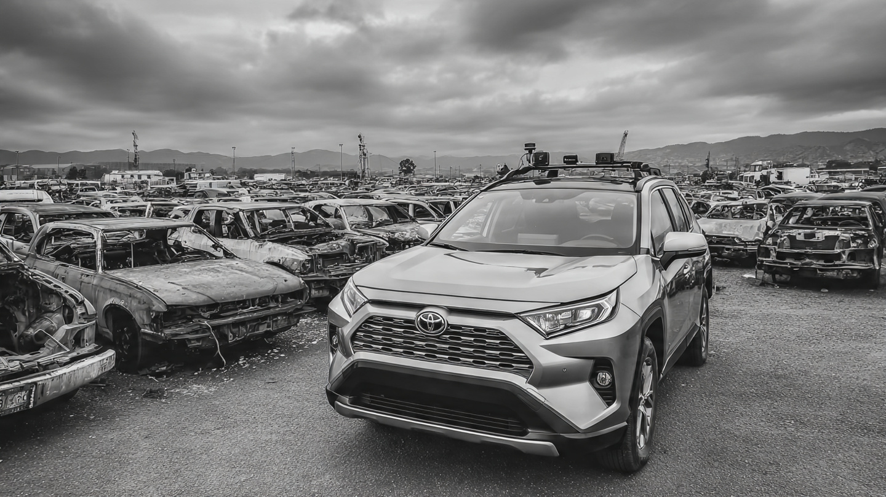

NHTSA Just Rated the Future. The Death Fleet Is Stuck in 2006.

On May 7, NHTSA announced that the 2026 Tesla Model Y became the first vehicle to pass its new advanced driver-assistance system tests: pedestrian automatic emergency braking, lane keeping assist, blind spot warning, and blind spot intervention.[1] Four new evaluations layered onto the existing five-star crash rating program, and Tesla cleared every one.
I ran the FARS database against that headline and found a number that makes the entire announcement feel like a press release from a future we will not reach for another two decades.
The vehicle at the center of the typical American fatal crash rolled off the assembly line when George W. Bush was president, gas cost $2.31 a gallon, and the iPhone did not exist, which means it has no forward-collision warning, no automatic braking, no lane departure alert, no blind spot monitoring, and no pedestrian detection of any kind. NHTSA's new rating program tests none of the vehicles that are actually killing people.
The Distribution Nobody Publishes
I aggregated 185,613 deaths across 337 vehicle models in FARS, bucketed by the model year of the vehicle involved, and the distribution is not subtle: peak fatality contribution comes from model years 2002 through 2007, each responsible for more than 10,000 deaths over the decade, with model year 2005 alone accounting for 11,363 of them.[2]
From the newest end of the curve, model year 2020 and later vehicles account for 5,955 deaths, which is 3.2% of the total pool, while model year 2015 and later reaches 32,427 deaths, or 17.5%. The remaining 65.1% of fatal-crash deaths involve vehicles built before 2010, when automatic emergency braking existed only in a Mercedes S-Class brochure and nowhere near a Dodge Neon.
When Does ADAS Actually Reach the Death Fleet?
Twenty automakers signed a voluntary AEB commitment in 2016, promising standard AEB by September 2022, and by that deadline roughly 95% of new vehicles shipped with forward-collision warning and automatic emergency braking.[3] Call 2022 the inflection year.
The average age of a vehicle on U.S. roads hit 12.8 years in 2025 according to S&P Global Mobility, with passenger cars averaging 14.5 years among the 289 million light vehicles in operation, a fleet so old that passenger cars just fell below 100 million registrations for the first time since the 1970s.[4]
Fatal crashes skew even older. The FARS median death model year of 2006 implies that the vehicles killing people are roughly 12 to 17 years old at the time of the crash, which, applied to the 2022 AEB-universal cohort, produces a sobering timeline: AEB-equipped vehicles will not constitute the majority of the fatal crash fleet until approximately 2037 to 2040, and pedestrian AEB, lane keeping, and blind spot intervention, which are even newer features with lower penetration, reach majority status in the death fleet sometime in the mid-2040s.
Three percent tested. Sixty-five percent untouchable.
The Frozen Mandate
In May 2024, NHTSA issued FMVSS 127, a federal safety standard requiring automatic emergency braking in all new passenger vehicles by September 2029, projecting 360 lives saved per year and 24,000 fewer injuries.[5] Then the Trump administration froze it, litigation is ongoing, and automakers now occupy a regulatory limbo where compliance deadlines exist on paper but enforcement does not.[6]
If FMVSS 127 takes effect on schedule and every 2029-and-later vehicle ships with AEB, applying the FARS age-lag puts the mandate's meaningful impact on the death fleet at roughly 2045. If it stays frozen, push that date further into a future none of us can see. The gap between the laboratory and the roadway is measured in decades.
The Counterargument, at Full Strength
New-car ratings serve a different purpose than fleet remediation, and NHTSA is not claiming its ADAS tests will save lives tomorrow; the argument is forward-looking, premised on the idea that informed consumers choose safer vehicles, manufacturers compete on safety features, and the fleet improves over time through natural turnover. AEB on new vehicles does reduce crashes even while the old fleet dominates fatalities, because newer vehicles drive a disproportionate share of total miles, and the per-vehicle fatality rate for 2020+ model years is dramatically lower than for pre-2010 vehicles, meaning the FARS death count understates the safety improvement already achieved in the new fleet.
All true. None of it addresses the fundamental arithmetic: 120,881 people died in vehicles too old for the features being rated, and at the current fleet turnover rate, the majority of fatal-crash vehicles will lack ADAS protections until the 2040s. No rating system closes that gap.
What This Means for You
If your vehicle is model year 2016 or earlier, it almost certainly has no pedestrian AEB, no lane keeping assist, and no blind spot intervention, and NHTSA's new rating program has nothing to say about it. For used-car shoppers: prioritize 2020 or later model years with a confirmed ADAS suite, and verify the specific vehicle's IIHS ratings at iihs.org/ratings. The VIN lookup at nhtsa.gov/recalls tells you about defects in what your vehicle already has, but it will never tell you about the safety technology it was never built with in the first place.
Limitations
FARS captures only fatal crashes, which means AEB may prevent a significant number of non-fatal crashes invisible to this dataset, and our 337-model sample underrepresents low-volume luxury vehicles that adopted ADAS earliest. Model year in FARS reflects the crash vehicle, not necessarily the at-fault vehicle, so AEB on the other car could also prevent the collision. Fleet age varies substantially by region, and the 12.8-year national average conceals geographic disparities ranging from 10 years in wealthier urban corridors to 16+ years in rural states.
Methodology
We aggregated deaths from FARS (2014–2023) across 337 vehicle models, filtered to model years 1990–2023, for a total of 185,613 deaths. Median model year was computed as the 50th percentile of the cumulative death distribution. ADAS penetration timelines are based on the 2016 voluntary AEB commitment deadline (September 2022), IIHS compliance tracking, and the FMVSS 127 mandate (September 2029, currently frozen). Fleet age-lag estimate uses S&P Global Mobility’s 2025 figure of 12.8 years, adjusted upward for the empirical FARS observation that the fatal-crash fleet skews 4–5 years older than the general fleet.
Sources & References
- TechCrunch, “Tesla Model Y is first car to meet new US driver assistance safety benchmark,” May 7, 2026. techcrunch.com
- NHTSA, Fatality Analysis Reporting System (FARS), 2014–2023. nhtsa.gov
- NHTSA, “NHTSA Announces Update to Historic AEB Commitment by 20 Automakers.” nhtsa.gov
- S&P Global Mobility via MOTOR, “U.S. Vehicle Age Rises Again to 12.8 Years in 2025.” motor.com
- NHTSA, “NHTSA Finalizes Rule on Automatic Emergency Braking,” May 2024. nhtsa.gov
- Nelson Mullins, “The Road Ahead for FMVSS 127: Whither the Automatic Emergency Braking Mandate?” nelsonmullins.com
The Crash Report uses NHTSA FARS data (2014–2023) and publicly available fleet statistics. Fatality counts reflect all persons killed in crashes involving the named vehicle. Estimated rates carry uncertainty of ±15% for low-volume models. Nothing here constitutes legal or purchasing advice.